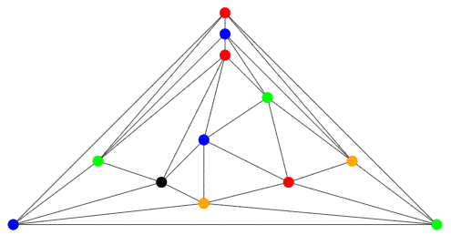

template<class VertexListGraph, class ColorMap>
typename property_traits<ColorMap>::value_type
planar_vertex_six_coloring(const VertexListGraph& g, ColorMap color);
Computes a vertex coloring for
the vertices in the planar graph in linear time, using at most 6 colors.
Planar graphs can always be vertex colored with 4 colors, there
is a quadratic time algorithm.
Boost sequential_vertex_coloring can be forced to use any number k of colors for a crafted planar graph (first test graph).
Here is the vertex coloring with 5 colors determined for icosahedron.

Planar graphs with n vertices have at most 3n-6 edges. Therefore always a vertex of degree ≤5 exists. Algorithm removes such "small" vertices until the graph becomes empty. Then the vertices are colored in reverse order they were removed, with the smallest color different to its at most 5 neighbors when it was removed. Therefore at most 6 colors are needed.
The graph object on which the algorithm will be applied. The type Graph must be a model of Vertex List Graph and Adjacency Graph.OUT: ColorMap color
This property map records the colors of each vertex. It must be a model of Writeable Property Map whose key type is the same as the vertex descriptor type of the graph and whose value type is an integral type that can store all values of the graph's vertices_size_type.
template< class graph > void simple_maximal_planar_random_graph(graph& g, int n); // see example typedef adjacency_list< listS, vecS, undirectedS > Graph; typedef graph_traits< Graph >::vertices_size_type vertices_size_type; Graph g; simple_maximal_planar_random_graph(g, 1000000); std::vector< vertices_size_type > color_vec(num_vertices(g)); auto color = make_container_vertex_map(color_vec, g); vertices_size_type num_colors = planar_vertex_six_coloring(g, color);
| Copyright © 2024 | Hermann Stamm-Wilbrandt (hermann@stamm-wilbrandt.de) |